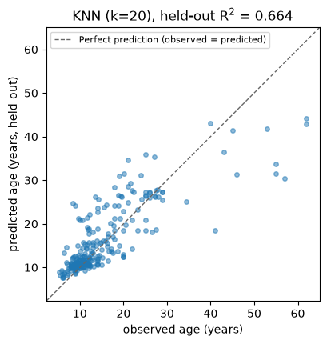
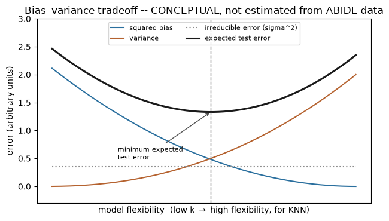
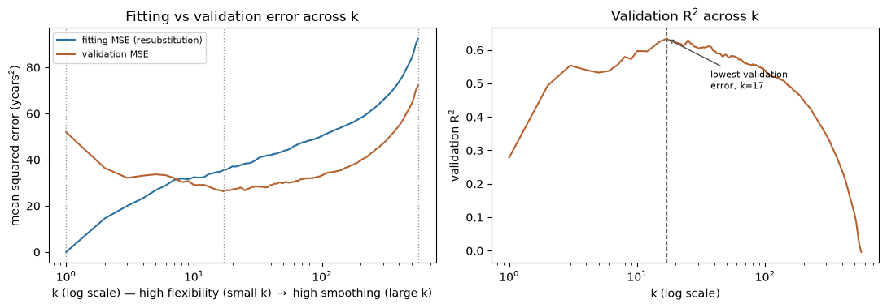

Exercise 3: KNN and the Bias–Variance Tradeoff#
Run or download this notebook
This page is fully readable as it is, and the interactive activity works here in the browser. To run or change the Python code, use the portable version of the notebook:
View or download the portable
.ipynbfor VS Code or Jupyter
The portable notebook keeps every Python analysis cell and swaps the embedded activity for a link back to this page.
What this notebook covers#
This is Exercise 3 of Machine Learning for Neuroscience. K-nearest neighbours (KNN) predicts a new participant’s outcome from the outcomes of the training participants who look most similar:
for regression, KNN averages the outcome of the
knearest training participants;KNN can also do classification, voting among the
knearest labels instead of averaging – you will see that later; this notebook is regression only.
This practice uses k – the number of neighbours – to make the
bias–variance tradeoff concrete: a small k is flexible (low bias,
high variance); a large k is smooth (higher bias, low variance).
In this notebook you will:
reuse Exercise 2’s data table, target, feature recipe, and locked train/test split;
fit one standardized KNN regression workflow at
k = 20, the value used in this worked example, on the training participants, and compare it with Exercise 2’s linear regression on the exact same data;interactively compare correct and misleading ways to evaluate a model, across every
k;see the classic bias–variance tradeoff as a labelled, conceptual curve;
see how training and validation error change across every
k, computed directly from this dataset;explore that yourself with a browser activity, including how predictions vary across different training samples.
Prerequisites: Exercise 2’s train/test workflow, R² and MSE, and
Pipeline / fit / predict in scikit-learn.
1. Our data table#
This is the same ABIDE-II data table Exercise 2 uses: one row per
participant, phenotype columns (including the target, age), and brain
columns (fsCT, fsArea, fsVol, fsLGI, one HCP-MMP1 cortical region per
hemisphere). See Exercise 2 for the full provenance and column-by-column
discussion; this notebook only reloads the table and previews it.
data table: 1004 participants x 1446 columns
# A compact preview only -- Exercise 2 already covers this table in full.
preview_cols = ["subject", "site", "group", "age", "sex", "fsCT_L_46_ROI"]
display(model_df[preview_cols].head(3))
print("age available for", int(model_df["age"].notna().sum()), "of", len(model_df), "participants")
| subject | site | group | age | sex | fsCT_L_46_ROI | |
|---|---|---|---|---|---|---|
| 0 | 29293 | ABIDEII-KKI_1 | 1.0 | 8.893151 | 2.0 | 2.366 |
| 1 | 28997 | ABIDEII-OHSU_1 | 1.0 | 12.000000 | 2.0 | 2.579 |
| 2 | 28845 | ABIDEII-GU_1 | 2.0 | 8.390000 | 1.0 | 2.690 |
age available for 1004 of 1004 participants
2. One standard KNN regression workflow#
Target: age, in years – Exercise 2’s own outcome. Features: the
exact same recipe as Exercise 2’s worked example – every one of the 360
cortical atlas parcels for cortical thickness (fsCT), bilateral. Split:
the exact same locked 75/25 train/test split as Exercise 2
(train_test_split(test_size=0.25, random_state=42, stratify=group)),
re-derived here from the same data so it lands on the identical 753
training and 251 test participants.
KNN regression predicts
the average outcome of the k training participants whose features are
closest to \(x_0\). The neighbourhood is found using predictors only – a new
participant’s age is never used to find their neighbours.
Feature scaling matters here more directly than it did for linear
regression: KNN measures distance in feature space, and an unscaled feature
with large numeric range would dominate that distance just because of its
units, not because it is more informative. StandardScaler belongs inside
the Pipeline and must be fit on the training data only, exactly like
Exercise 2.
A short note on dimensionality. In very high-dimensional feature spaces, most pairs of points end up roughly equally far apart, so “nearest neighbour” can stop meaning much – the curse of dimensionality. This recipe’s 360 standardized features are not astronomically high-dimensional for 753 training rows, and KNN works well here at k = 20; a higher-dimensional recipe or a smaller sample could behave differently.
# The full set of 360 cortical-thickness columns -- identical recipe and
# code to Exercise 2's Section 2.
FEATURES = [c for c in BRAIN_COLS if c.startswith("fsCT_")]
assert all(c.startswith("fsCT_") for c in FEATURES) # brain-only
assert "age" not in FEATURES # no target leakage
print(f"{len(FEATURES)} features, e.g. {FEATURES[:3]}")
360 features, e.g. ['fsCT_L_V1_ROI', 'fsCT_L_MST_ROI', 'fsCT_L_V6_ROI']
# Brain-only X and target y, then the SAME fixed, stratified split as
# Exercise 2 (groups is carried through only so Section 5 can re-split the
# training partition later; it does not change X_train/X_test/y_train/y_test).
has_age = model_df["age"].notna()
X = model_df.loc[has_age, FEATURES].to_numpy(float)
y = model_df.loc[has_age, "age"].to_numpy(float)
groups = model_df.loc[has_age, "group"].to_numpy() # 1 = autism, 2 = control
X_train, X_test, y_train, y_test, groups_train, groups_test = train_test_split(
X, y, groups, test_size=0.25, random_state=42, stratify=groups
)
print(f"n_train = {len(y_train)} n_test = {len(y_test)} n_features = {X.shape[1]}")
n_train = 753 n_test = 251 n_features = 360
Think first
Exercise 2’s linear regression scored held-out R² = 0.469 on this exact split and feature set. Before running KNN: do you expect it to score higher, lower, or about the same – and why? (Hint: think about what each model assumes about how brain structure relates to age.)
Choosing k for this example#
In this introductory exercise, we choose one model setting in advance, fit the model using the training participants, and evaluate it on the test participants. A later lesson will introduce systematic methods for selecting model settings.
K_EXAMPLE = 20
This is simply the value used for this worked example, chosen before the held-out result below is computed. It is not optimized, tuned, or chosen because it performed best.
K_EXAMPLE = 20
knn_model = make_pipeline(StandardScaler(), KNeighborsRegressor(n_neighbors=K_EXAMPLE))
knn_model.fit(X_train, y_train)
y_pred = knn_model.predict(X_test)
test_r2 = r2_score(y_test, y_pred)
test_mse = mean_squared_error(y_test, y_pred)
print(f"k = {K_EXAMPLE}")
print(f"held-out R^2 = {test_r2:.3f}")
print(f"held-out MSE = {test_mse:.1f} (RMSE {test_mse**0.5:.1f} years)")
k = 20
held-out R^2 = 0.664
held-out MSE = 31.4 (RMSE 5.6 years)

A few things to hold onto:
KNN with k = 20 scores a genuinely positive held-out R² on this recipe – no curse-of-dimensionality problem here;
unlike the linear-regression hyperplane, KNN makes no assumption about the shape of the relationship between features and age – it only assumes that similar brain measurements go with similar ages;
this is still a random-participant split from the same 17 ABIDE-II sites, so it says nothing about generalisation to a new scanner or site.
Compared with Exercise 2. On these exact same 753 training and 251 test participants, the exact same 360-feature recipe, and the exact same target:
# For comparison only -- exact same split/recipe/target as Exercise 2's
# Section 2, refit here so the comparison is self-contained.
ols_compare = make_pipeline(StandardScaler(), LinearRegression())
ols_compare.fit(X_train, y_train)
ols_r2 = r2_score(y_test, ols_compare.predict(X_test))
print(f"Exercise 2 linear regression held-out R^2 = {ols_r2:.3f}")
print(f"This notebook's KNN (k={K_EXAMPLE}) held-out R^2 = {test_r2:.3f}")
Exercise 2 linear regression held-out R^2 = 0.469
This notebook's KNN (k=20) held-out R^2 = 0.664
KNN scores higher than linear regression on this specific recipe and dataset. That is one comparison, not a universal claim that KNN beats linear regression – a different feature set, sample size, or outcome could easily reverse it. What it does show is that a non-parametric method with no assumption about the relationship’s shape found real, usable structure here.
3. Correct and misleading ways to evaluate a model#
Same fixed split, same 360-feature recipe, but now for every k, not
just one: k also changes how dramatically resubstitution and leakage
inflate performance, and the interactive activity below lets you see that
directly instead of reading it off two static tables.
fit on |
evaluate on |
what it estimates |
|
|---|---|---|---|
A. Valid |
training rows |
untouched test rows |
performance on new participants |
B. Resubstitution |
training rows |
those same training rows |
how well it fits data it has seen (a diagnostic, not a generalisation estimate) |
C. Invalid (leakage) |
test rows |
those same test rows |
nothing usable – the data used to fit cannot also give a valid score |
Think first
At k = 20 (Section 2’s worked-example value), predict the order of A, B, and C
from largest to smallest R². Then predict what changes about that ordering
at the smallest possible k, and why.
The activity recomputes real predictions, R², and MSE for all three panels
at whichever k you choose – nothing is a canned label. A few things to
notice as you move k:
at
k = 1, B and C are exactly perfect (R² = 1.000): every evaluated point is its own nearest neighbour, at distance zero, so the prediction reproduces the observation by construction, not because anything was learned;A at
k = 1is not perfect: the test participants it evaluates were never used for fitting, sok = 1’s perfect B/C scores are the clearest possible evidence that evaluating on fitted data is invalid – not evidence that KNN generalises perfectly;increasing
kaverages more observations, which usually reduces this dramatic resubstitution effect – watch how much closer A, B, and C stay to each other askgrows past k = 20 (Section 2’s worked-example value).
4. The classic bias–variance tradeoff#
For a model \(\hat f\) predicting outcome \(Y\) from features \(X\), the expected squared prediction error on a new observation decomposes as
For KNN, k controls flexibility directly:
small
k-> high flexibility, low bias, high variance (the model chases whichever few neighbours happened to be closest);large
k-> low flexibility, higher bias, lower variance (the model averages over so many neighbours it stops reacting to any one of them);training error alone keeps falling as flexibility increases (Section 3 showed
k = 1reaching a perfect resubstitution score), so it favours excessive flexibility and cannot be used to choosek;expected test error is minimised at some intermediate flexibility, where the falling bias² and the rising variance trade off against each other.
This is a general tendency of KNN, not a guarantee for every finite sample: the curve below is a labelled, conceptual illustration of the tradeoff – smooth idealised curves, not a measurement from the ABIDE data. Sections 5 and 6 compute observable, clearly-labelled analogues from this dataset.

5. How performance changes across every k#
This section builds a separate demonstration using only the outer-training
partition (X_train, y_train, 753 rows) – the outer test set from
Sections 2–3 is never touched here.
Split the training partition itself into two groups: a fitting group,
the participants KNN is fit on, and a validation group, the
participants it is scored on. We call their sizes N_fit (number of
fitting participants) and N_val (number of validation participants).
Every integer k from 1 through N_fit is evaluated on both the fitting
group (resubstitution) and the validation group, using the
sort-distances-once-then-cumulative-sum trick (Section 6 reuses the same
idea, and its plain-language description, in the browser).
FIT_TEST_SIZE = 0.25
FIT_RANDOM_STATE = 7 # independent of the outer split's random_state=42
X_fit, X_val, y_fit, y_val = train_test_split(
X_train, y_train, test_size=FIT_TEST_SIZE, random_state=FIT_RANDOM_STATE, stratify=groups_train
)
N_FIT = len(y_fit)
N_VAL = len(y_val)
print(f"fitting participants (N_fit) = {N_FIT} validation participants (N_val) = {N_VAL} (from the {len(y_train)}-row outer-training partition only)")
fitting participants (N_fit) = 564 validation participants (N_val) = 189 (from the 753-row outer-training partition only)
# Scale using the fitting subset only, then sort each query point's distances
# to every fitting point ONCE and derive predictions for every k from a
# cumulative mean -- far cheaper than refitting KNeighborsRegressor N_fit times.
t0 = time.time()
scaler_dev = StandardScaler().fit(X_fit)
Xf = scaler_dev.transform(X_fit)
Xv = scaler_dev.transform(X_val)
def sorted_neighbor_targets(X_query, X_ref, y_ref):
d = np.linalg.norm(X_query[:, None, :] - X_ref[None, :, :], axis=2)
order = np.argsort(d, axis=1, kind="stable")
return y_ref[order]
sorted_val = sorted_neighbor_targets(Xv, Xf, y_fit) # N_val x N_fit, nearest first
sorted_fit = sorted_neighbor_targets(Xf, Xf, y_fit) # N_fit x N_fit (self-inclusive)
def r2_mse_curve(sorted_targets, observed):
cum = np.cumsum(sorted_targets, axis=1)
ks = np.arange(1, sorted_targets.shape[1] + 1)
pred_all_k = cum / ks[None, :]
ss_res = np.sum((observed[:, None] - pred_all_k) ** 2, axis=0)
ss_tot = np.sum((observed - observed.mean()) ** 2)
r2 = 1.0 - ss_res / ss_tot
mse = np.mean((observed[:, None] - pred_all_k) ** 2, axis=0)
return r2, mse
val_r2, val_mse = r2_mse_curve(sorted_val, y_val)
fit_r2, fit_mse = r2_mse_curve(sorted_fit, y_fit)
ks = np.arange(1, N_FIT + 1)
val_optimal_k = int(ks[np.argmax(val_r2)])
print(f"computed {N_FIT} values of k for {N_FIT} fitting and {N_VAL} validation points in {time.time() - t0:.1f}s")
print(f"k=1 fit R^2={fit_r2[0]:.3f} val R^2={val_r2[0]:.3f}")
print(f"k={val_optimal_k} (lowest validation error) val R^2={val_r2[val_optimal_k - 1]:.3f}")
print(f"k=N_fit={N_FIT} fit R^2={fit_r2[-1]:.3f} val R^2={val_r2[-1]:.3f}")
computed 564 values of k for 564 fitting and 189 validation points in 0.3s
k=1 fit R^2=1.000 val R^2=0.279
k=17 (lowest validation error) val R^2=0.634
k=N_fit=564 fit R^2=-0.000 val R^2=-0.004
# Verify the k = N_fit endpoint explicitly: with every fitting participant as
# a neighbour, "the k nearest" is just "everyone", so the prediction is the
# SAME constant -- the fitting-set mean age -- for every validation participant.
pred_val_at_k_nfit = np.cumsum(sorted_val, axis=1)[:, -1] / N_FIT
assert np.allclose(pred_val_at_k_nfit, y_fit.mean())
print(f"k = N_fit: every validation prediction equals the fitting-set mean, {y_fit.mean():.3f} years")
k = N_fit: every validation prediction equals the fitting-set mean, 15.192 years

What this curve shows – and does not
Fitting error keeps falling as k shrinks (perfect at k = 1, exactly the
resubstitution optimism Section 3 demonstrated) while validation error is
lowest at an intermediate k and rises again toward both ends – behaviour
consistent with the bias–variance tradeoff. It does not directly
estimate bias and variance: the true population relationship between
cortical structure and age is unknown, and this is one observational sample,
not repeated draws from that population. The k with the lowest validation error here need not match the k = 20
worked-example value from Section 2 – they come from different splits of
different data and are not meant to agree exactly. Repeatedly inspecting this
curve is for illustration here; it is not used to claim a final optimized
score.
This development curve is exploratory. It never retunes or replaces the
Section 2 model: the outer test set stays locked, and the k reported there
is the notebook’s one number that counts.
6. Explore k yourself#
The central k-complexity relationship, stated plainly: a larger k
averages more neighbours and approaches predicting the fitting-set mean – a
simpler, smoother model with lower variance but higher bias. A
smaller k follows individual fitting participants more closely – a
more flexible, more complex model with lower bias but higher variance and
a greater risk of overfitting. “Lower bias” is a general tendency of KNN, not
a guarantee for every finite sample – the activity below, and Section 3’s
activity above, let you watch what actually happens in this one.
The activity below lets you move the same k from 1 through every fitting
participant (N_fit) yourself, on the same fitting/validation split as Section 5 – now with an
exact numeric entry alongside the slider, and three deterministic
alternative training samples so you can see directly how much predictions
depend on which participants happened to be drawn for training, at small
and large k. Every plot and every number recomputes from the actual
refitted model at your chosen k – nothing is a canned label. The activity
opens at k = 20, the same worked-example value as Section 2, but this is
exploration of model behaviour, not parameter selection: moving the slider
does not choose a final k for the notebook. It runs entirely in the browser,
offline, with no brain features or participant identifiers ever sent
anywhere.
In summary#
KNN regression predicts by averaging the
knearest training participants’ outcomes;kdirectly controls flexibility.Fixing
k = 20in advance, fitting on the training participants, and evaluating once on a locked test set is the same workflow structure Exercise 2 used for linear regression – only the model family changed. A later lesson introduces systematic methods for choosingk.Resubstitution and leakage inflate performance the same way they did for linear regression; how dramatically they inflate it depends on
k– the Section 3 activity makes that dependence, and its extreme atk = 1, directly interactive.Small
kmeans low bias and high variance; largekmeans higher bias and low variance; training error alone cannot choose between them. The Section 6 activity’s training-sample-sensitivity and binned-calibration panels make both halves of that tradeoff separately observable.A curve computed from real fitting and validation data is consistent with the bias–variance tradeoff without being a direct measurement of it – the population relationship is unknown and only one sample is available.
Next practice: classification, where KNN votes among neighbours’ labels instead of averaging their values.
Questions to take away#
What happens to flexibility when
kincreases?Why can
k = 1achieve perfect resubstitution performance?Why is that not evidence of good generalisation?
What does
k = N_fitpredict for every new participant?Why must scaling be learned only from training data, exactly as in Exercise 2?
In Section 6, at a small
k, why do the three training samples’ scatter plots differ more than they do at a largek?In Section 6’s binned calibration panel, why does the ensemble’s prediction line flatten as
kgrows, and which participants does that flattening hurt most?Why is a validation curve computed from one dataset not a direct measurement of bias and variance?
Would the
kused here necessarily generalise to a completely new scanning site? Why or why not?